Mujeres
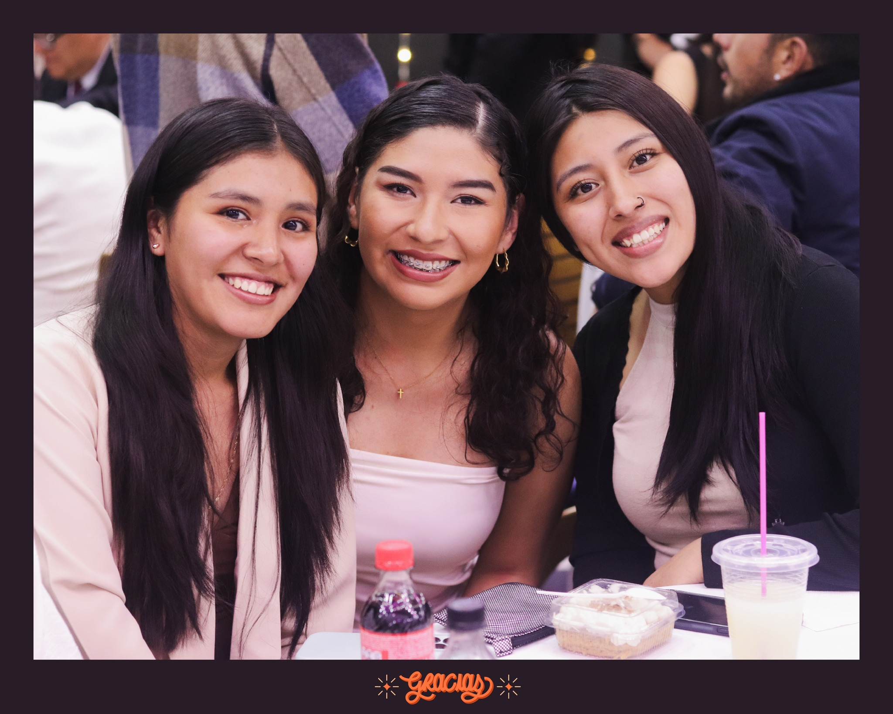
Mujeres Jóvenes
Descubriendo nuestra identidad en Cristo y construyendo amistades sólidas basadas en la verdad bíblica.
Encontrar esta Casa Vida
La iglesia no se vive solo los domingos. Las Casas Vida son nuestros grupos pequeños semanales, donde compartimos la vida, estudiamos la Biblia, oramos unos por otros y crecemos juntos en comunidad. Encuentra una Casa Vida cerca de ti y sé parte de una familia espiritual.

Descubriendo nuestra identidad en Cristo y construyendo amistades sólidas basadas en la verdad bíblica.
Encontrar esta Casa Vida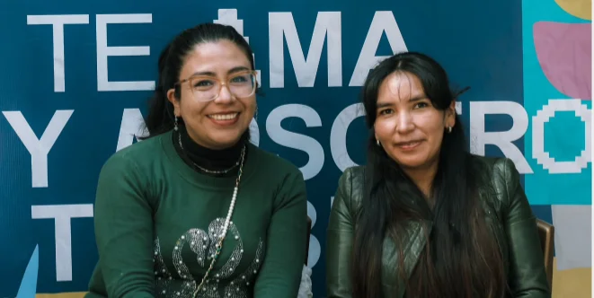
Sabiduría compartida y fe vivida en comunidad, con enfoque en la madurez espiritual y el apoyo mutuo.
Encontrar esta Casa Vida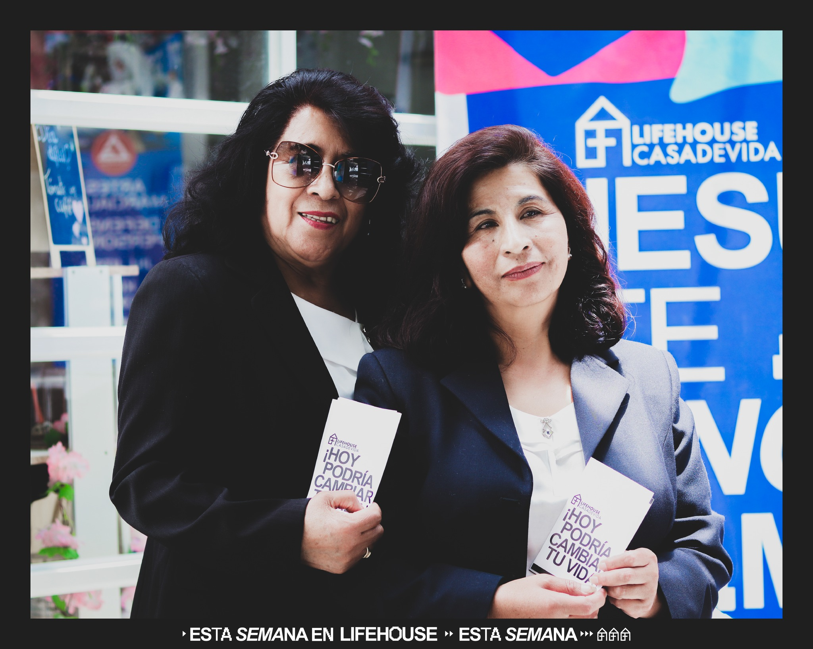
Sabiduría compartida y fe vivida en comunidad, con enfoque en la madurez espiritual y el apoyo mutuo.
Encontrar esta Casa Vida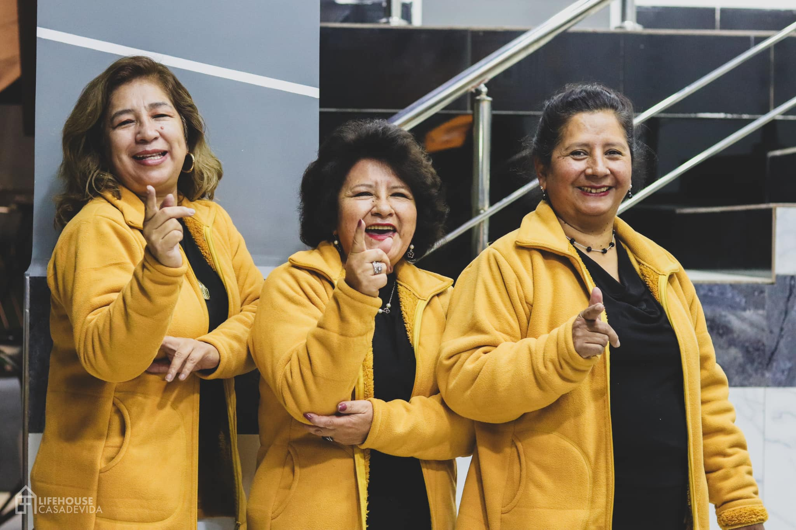
Un espacio seguro para compartir la vida, profundizar en la Palabra y acompañarnos en cada temporada.
Encontrar esta Casa Vida
Desarrollando amistades de edificación y propósito en una etapa clave de la vida.
Encontrar esta Casa Vida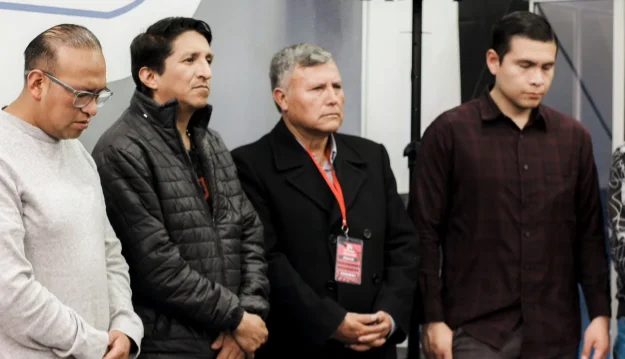
Liderazgo, hermandad y crecimiento espiritual para hombres que desean vivir su fe con propósito.
Encontrar esta Casa Vida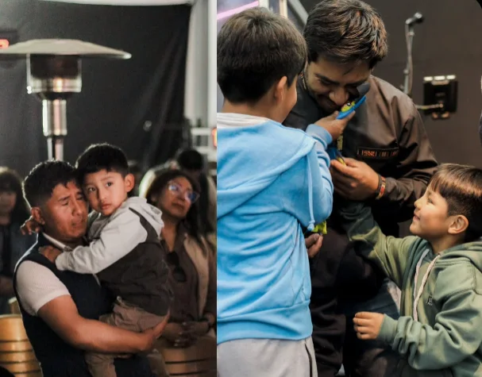
Fortaleciendo el matrimonio y la familia a través de principios bíblicos y una comunidad que acompaña.
Encontrar esta Casa Vida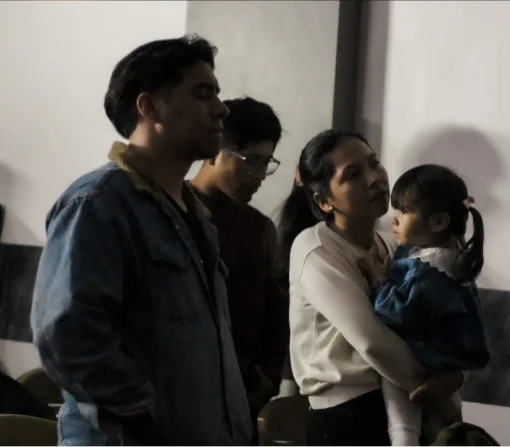
Un espacio para construir matrimonios saludables, crecer juntos y establecer hogares centrados en Jesús.
Encontrar esta Casa VidaUn lugar donde los niños conocen y aman a Jesús. LH Kids es el grupo de niños de LifeHouse. Cada domingo vivimos un tiempo diseñado especialmente para ellos, con enseñanzas bíblicas, juegos y actividades adaptadas a su edad. Además, durante el año realizamos Bitácora, nuestro encuentro mensual, y un retiro anual para seguir creciendo en su fe.
Todos nuestros maestros y voluntarios pasan por un proceso de selección y capacitación antes de servir en LH Kids, con el propósito de ofrecer un ambiente seguro, confiable y lleno del amor de Jesús para cada niño.
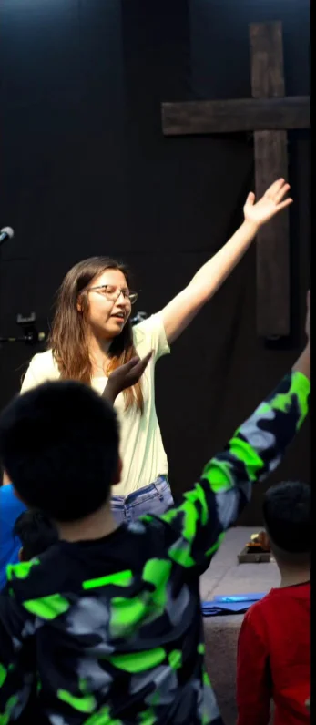
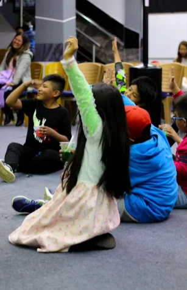
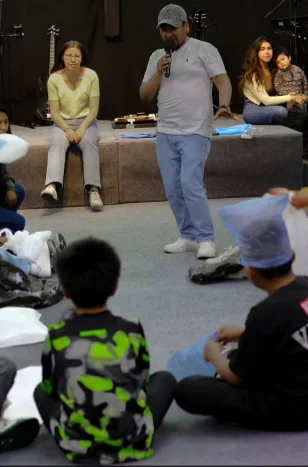
Un espacio para crecer, conectar y vivir la fe con otros jóvenes. Clay es el ministerio de jóvenes de LifeHouse. Durante el año nos reunimos en las Noches Clay, encuentros diseñados para fortalecer nuestra relación con Dios, crear amistades auténticas y vivir experiencias que transforman vidas. También compartimos un campamento anual.


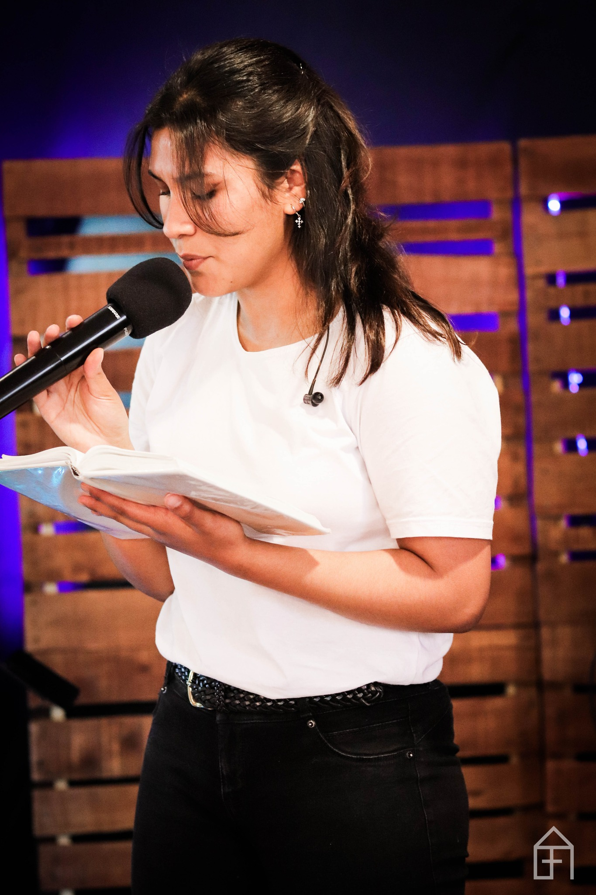
Un lugar donde los adolescentes pueden crecer en su identidad y en su fe. Vista es el ministerio de adolescentes de LifeHouse. Cada domingo tienen un espacio pensado especialmente para ellos y, además, se reúnen una vez al mes para compartir, aprender y fortalecer su relación con Dios. También participan del Campamento Clay junto a los jóvenes.
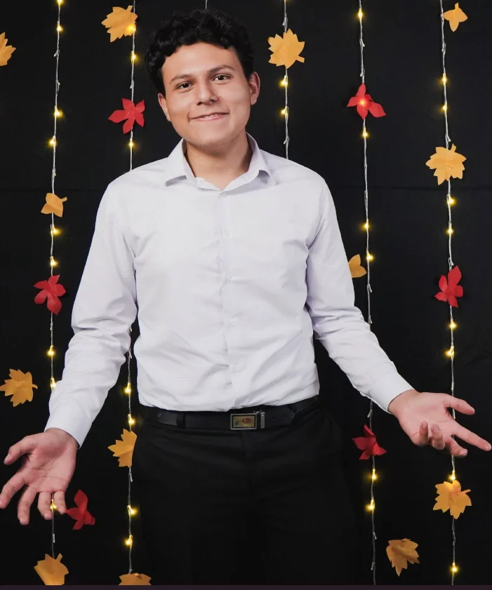
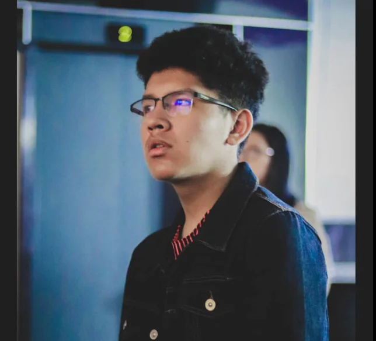
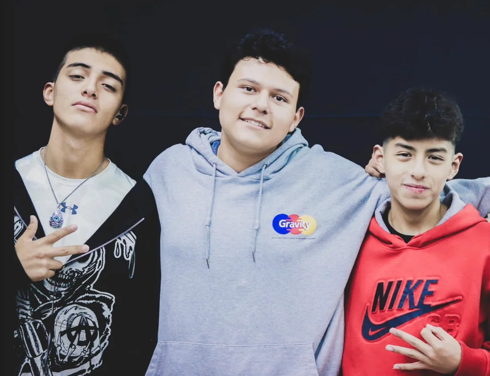